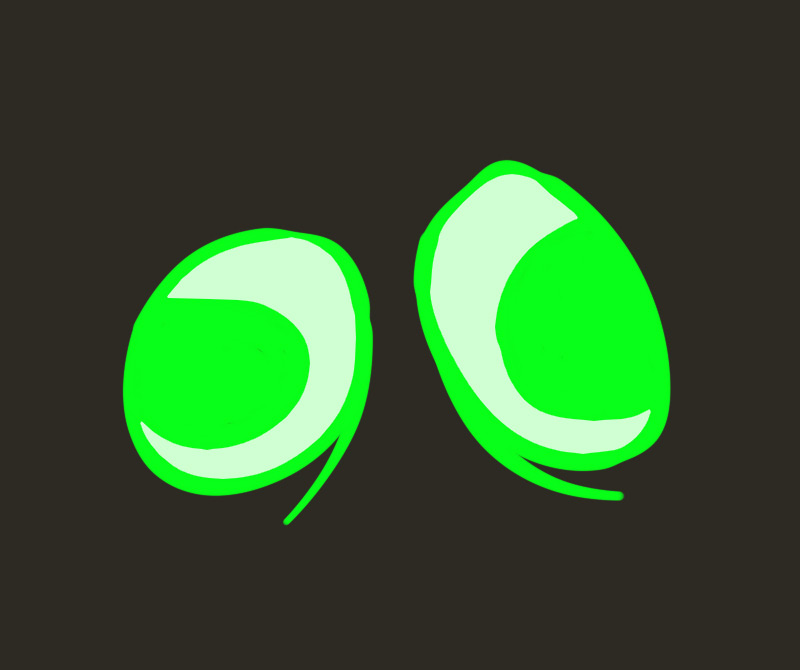

PORTFOLIO CREATIVO // MDP - ARG
Ideas que toman
DESARROLLO WEB · IDEAS EN MOVIMIENTO
Ideas que toman
forma propia.
Soy Ian Francano, Técnico Universitario en Programación (UTN) y estudiante de Ingeniería Informática (UNMDP). Diseño y desarrollo páginas web, sistemas de gestión y experiencias interactivas pensadas para funcionar bien y destacar.
CURIOSIDAD, CÓDIGO Y CREATIVIDAD.
✦
✧

CH 01 / CREADORIAN FRANCANO
TRABAJO SELECCIONADO
Proyectos en escena.
Cada proyecto es una idea distinta. Elegí uno para conocerlo en funcionamiento.
HERRAMIENTAS Y TECNOLOGÍAS
Stack técnico.
Tecnologías, entornos y metodologías con las que construyo aplicaciones web, sistemas backend y videojuegos.
RECORRIDO PROFESIONAL Y ACADÉMICO
Experiencia & formación.
ACREDITACIONES Y CERTIFICADOS
Títulos obtenidos.
Tocá cualquiera de los títulos para visualizar su documento PDF en ventana modal.
✦ HAZLO O NO LO HAGAS, PERO NO LO INTENTES — YODA ✦